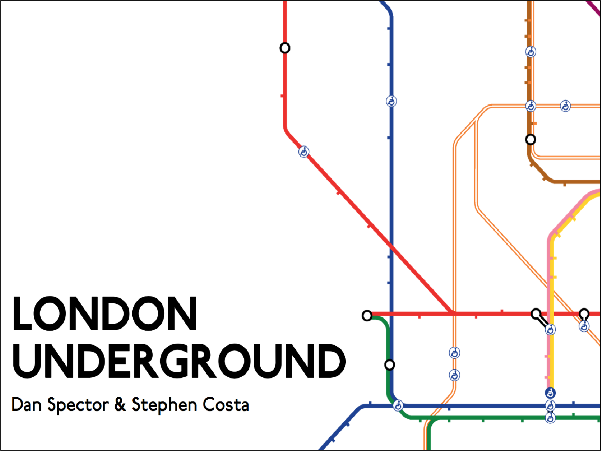

  <div class="container nomargin">

      <section id="header1" class='text-center padding'>

        <div class="container">

          <div class="row">
            <div class="col-md-12">

                <div class="margin"></div>

                 <h1 class="title">London Underground</h1>
                 <a href=projects/underground.pdf><h2 class="skills">View PDF</h2></a>
            </div>
            </div>

            <div class="row">
              <div class="col-md-8 col-md-offset-2">
              <div class="card">
              <a href="projects/underground.pdf"> </a>
                <div class="card-body">
                  <h4 class="card-title">A History Presentation of the London Tube Map</h4>
                  <p class="card-text">I made a history project with a classmate about the London Tube Map. This famous
                  map was designed by Harry Beck and is the inspiration for many modern subway maps. We used the same typeface (<a href="https://en.wikipedia.org/wiki/Johnston_(typeface)">Johnston</a>) and color scheme
                  of the tube map in our presentation. Click above to view the PDF of our presentation. </p>
                </div>
              </div>
              </div>
            </div>

          </div>

        </section>

      </div>
